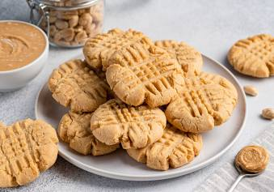

Peanut 🥜 Butter 🧈 Cookies 🍪

Whip up these scrumptious 3-Ingredient Peanut Butter Cookies in a snap! With just peanut butter, sugar, and an egg, you'll have a delightful treat that's perfect for satisfying your sweet tooth.
Ingredients(for 25 Cookies)
- 1 cup peanut butter(240g)
- 1/2 cup sugar(100g)
- 1 egg
Preparation
- Preheat oven to 350ºF (180ºC).
- In a large bowl, mix together the peanut butter, sugar, and egg.
- Scoop out a spoonful of dough and roll it into a ball. Place the cookie balls onto a nonstick baking sheet.
- For extra decoration and to make them cook more evenly, flatten the cookie balls by pressing a fork down on top of them, then press it down again at a 90º angle to make a criss-cross pattern.
- Bake for 8-10 minutes or until the bottom of the cookies are golden brown.
- Remove from baking sheet and cool.
- Enjoy!
Next recipe
Return to Home page